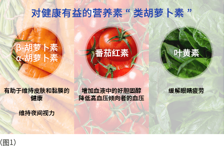
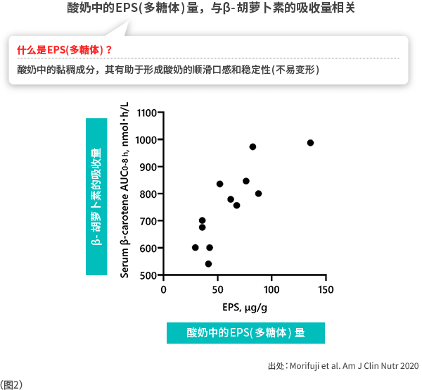
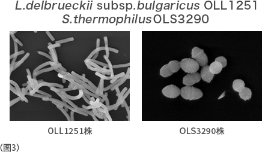

蔬菜的营养素-类胡萝卜素与乳酸菌
什么是类胡萝卜素的健康功能？
在补充营养方面，富含维生素等多种营养的蔬菜是不可或缺的。其中特别是深色蔬菜，含有一种叫做“类胡萝卜素”的营养成分。
类胡萝卜素是红色或黄色等的色素成分，已知它具有多种健康功能。例如，胡萝卜中含有的β-胡萝卜素有助于维持皮肤及黏膜的健康，并维持夜间视力。番茄中含有的番茄红素已有报告证实其具有增加血液中高密度脂蛋白(high-density lipo-protein, HDL)胆固醇和降低血压的功能，其作为营养补充食品和功能性标示食品中的有效成分广为人知。此外，菠菜中含有的叶黄素有助于缓解眼睛疲劳。由此可见，类胡萝卜素是维护我们健康的有益营养素。(图1)

类胡萝卜素的吸收率与乳酸菌的关系
尽管类胡萝卜素对人体健康有益，但其吸收率会因摄取方式不同而有所差异。例如，胡萝卜中所含的β-胡萝卜素在生食时，体内吸收率仅为约10%。为了最大限度发挥类胡萝卜素的健康功能，需要在饮食中想办法提高其吸收率。于是，明治公司着眼于酸奶的新潜力，开展了蔬菜和酸奶同时摄入对类胡萝卜素吸收量影响的研究。结果报告显示，以大鼠试验为例，当β-胡萝卜素与乳酸菌发酵的酸奶同时摄入时，血清中的β-胡萝卜素浓度，较仅摄入β-胡萝卜素时显著提高，研究还表明，其有效成分为乳蛋白质和乳酸菌代谢物EPS(多糖体)。(图2)

产出高量EPS（多糖体）的乳酸菌
为了进一步验证蔬菜与酸奶同时摄入对人体的有效性，明治公司从其拥有约6,500株乳酸菌库中筛选出能够大量产出EPS（多糖体）的乳酸菌。它们就是L. delbrueckii subsp. bulgaricus OLL1251株（乳酸菌OLL1251株）和S. thermophilus OLS3290株（乳酸菌OLS3290株）。（图3）
